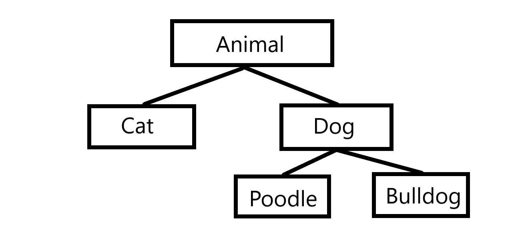

Object-Oriented programming
Object-Oriented programming (OOP) is a way to simulate real-life situations through software. Rather than functions and logic involved in a typical program, OOP is a way to use coding to design data using objects. For example, imagine a car, we can use OOP to simulate a car object in code with its own attributes (features), and methods (functions). Here is an example of using code to simulate a class Dog. We will go over the details of the code later.
public class Dog {
// Attributes
private String name;
private String type;
private int age;
// Constructor
public Dog(String n, String t, int a) {
name = n;
type = t;
age = a;
}
// Method
public void makeSound() {
System.out.println("Bark!");
}
}
Classes & Objects
There are two main structures when using OOP, which are objects and classes. A Class is a template or blueprint that contains the variables (attributes) and the methods (behaviours) common to a specific type of object, such as a Dog class. An object however is an instance of a class that holds specific values such as its name, attribute and behaviour, such as the Mustang object. These objects hold their own unique attributes and methods unless it is static which means its common to all cars, and that is an access identifier (more on that later). Constructor is a standard part of a class and has the same name as the class. When an object is created the constructor is automatically run and when a constructor is not created, a default constructor is made by Java but this is not good practice. Now back to the above code example. It contains a Dog class with attributes such as name, type and age, and the behaviour of makingSound(). To create an object of the Dog class we need to use the new keyword.
Here is how to create an object of dog class:
Dog myDog = new Car("Pinky", "Husky", 2);
Encapsulation
Encapsulation in Java is the process through which the variables and methods are integrated as a single unit therefore other classes cannot access them, and only the methods of the original class can. This can be achieved through three access modifiers:
Public: A public variable can be accessed by any classes and packages in the program and they can modify the public variable.
Private: A private variable can only be accessed within the same class and is not visible to other classes or packages.
Protected: A protected variable is accessible within the same package and by subclasses (this is inheritance, more on that later).
Hence, It is good practice to make variables private use get/set methods instead of making them pubolic so the original data can’t be corrupted/changed as easily.
Inheritance
Inheritance is a very important and useful feature that can be used with classes to create more realistic situations. Inheritance is when you create a subclass that inherits all the properties from a main class, therefore there is no need to rewrite code. An example of inheritance in real life is similar to how a child inherits their features from their parents but still has their own features that are unique to them. Encapsulation is especially useful when using inheritance, to restrict the direct access to variables.

In the above Heirarchy table, the class Animal is the superclass. It has two subclasses called Dog and Cat. These subclasses inherits the properties of the Animal superclass. The Dog subclass has its own subclasses Poodle and Bulldog. To these subclasses Dog is the superclass. Therefore a class can have multiple sublcass but only one superclass. A subclass itself can turn into a superclass as shown.
Special Keywords
super: The super keyword is used to refer to the superclass within a subclass. It is commonly used to access the superclass's constructor, methods, or attributes.
this: The this keyword refers to the current instance of a class. It is commonly used within a class to refer to its own instance variables or methods.
public class Animal {
protected String name;
public Animal(String name) {
this.name = name;
}
}
public class Dog extends Animal {
private String breed;
public Dog(String name, String breed) {
super(name);
this.breed = breed;
}
public void displayInfo() {
System.out.println("Name: " + super.name);
System.out.println("Breed: " + breed);
}
}
In this example, the Dog class extends the Animal class. The super(name) statement in the Dog class constructor calls the superclass constructor to set the name attribute. Similarly the this used in the code refers to the object instance itself.
Method Overriding
Overriding is when you create a method in the subclass that is the same as the parent class and in this case, the subclass runs the method inside this than the main class which is overriding its main class method. This is especially useful in scenarios where two subclasses do the same action however different tasks, for example both cats and dogs make noise however a dog barks and a cat meows.
Polymorphism
In Java polymorphism is the ability of a class to to use different implementations of a method depending on the type of object it is. This allows us to perform the same action in many different ways, therefore this only occurs when inheritance is involved. Superclasses of different subclasses are all polymorphic, or another way of thinking about this is that if a class can pass more than one IS-A test, it is polymorphic. Polymorphism is achieved through method overloading and method overriding.
Method Overloading & Method Overriding
Method Overloading: This is the process of creating multiple methods of the same name in the same class, but having different set of parameters. This allows the method to work in different ways with different parameters.
public int add(int a, int b) {
return a + b;
}
public double add(double a, double b) {
return a + b;
}
Method Overriding: This is the process of rewriting a method in the subclass however it contains a different function.
public class Animal {
public void makeSound() {
System.out.println("Sound!");
}
}
public class Dog extends Animal {
@Override
public void makeSound() {
System.out.println("Woof Woof!");
}
}
Types of Polymorphism
Compile Time Polymorphism: This is when the call to the method is resolved at compile-time. This is achieved through Method Overloading. Therefore at compile time it uses the method according to the parameters passed.
Runtime polymorphism : the process when the call to an overridden method is resolved dynamically at runtime rather than at compile-time. This can be achieved through Method Overriding. Therefore instead of using the method of the parent class, this uses the method created within the object subclass it was instantiated as. .
Abstraction
Abstraction is achieved using abstract classes and interfaces. Abstract classes cannot be instantiated and serve as a blueprint for derived classes. Interfaces define a contract for classes to implement specific methods. Interfaces defines the contract that classes must adhere to. They specify a set of methods that implementing classes must provide. Here is a simple table describing both Interfaces and Abstract classes provided by DigitalOcean:

Common Mistakes using OOP
- Misunderstanding method overloading and overriding. Even I at the beginning kept switching the concepts up, so make sure to know the difference.
- Not following the principles of encapsulation and abstraction will lead to problems as your program grows.
- Inappropriate or excessive use of inheritance.
- Even though Java provides a default constructor always make your own constructors.